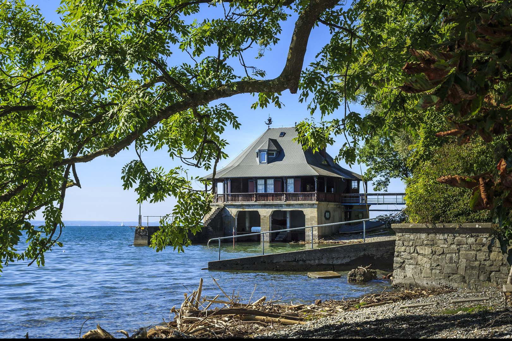
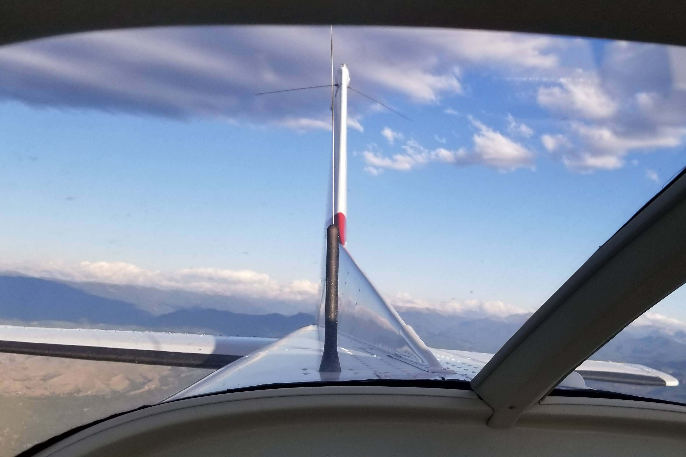
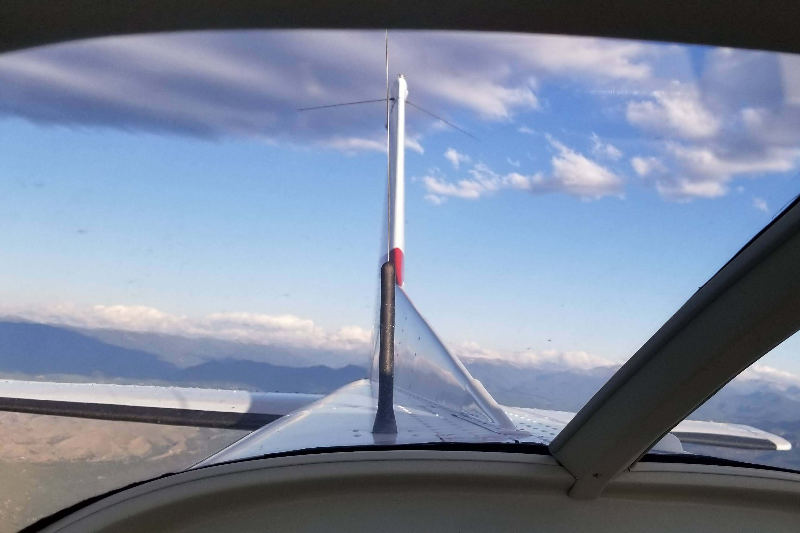

Ocean Blues is a condo that overlooks the beach and ocean. This condo is the perfect place for beach-goers, swimmers, animal enthusiasts, and surfers to spend their vacation. It allows direct access to the beach, which is wellknown for its soft sands and shelling. The ocean at this location is also home to big waves, wildlife, and prime snorkeling and scuba diving.

Rocky Waves is a house situated at the top of a hill, with beautiful views of the lake and mountains. It is a great place to watch both sunrises and sunsets and it provides amazing views of the night sky. Included with the house are 150 acres with trails that you are free to explore and take your UTV on.
Waterlogged is a great location for water lovers. It provides two in water covered boat storage slips where you can simply store your boat under the house. The home alos gives you access to lake views and a yard perfect for games and cookouts. Previous visitors of the home have said that the fishing is exceptional as well.

The Treehouse Cabin makes for a fun vacation spot. This house is situated in the trees and offers vast views over the surrounding forest and area. Because of it's location, the house allows for frequent sightings of both small birds as well as larger birds such as eagles and owls. Besides the views, the house is equiped with a walkway that takes you to a patio area off of the main house. From here you can catch a sunset or enjoy a meal.
The Whispering Pines Campsite is a great location to enjoy the calm atmosphere that the forest provides. It is called the Whispering Pines because of the breeze that can be heared blowing through the trees. The site also offers easy access to nearby hiking and biking trails that allow you to explore and challenge yourself in this beautiful pine forest.
This site offers a quaint wooded area next to a creek that provides beautiful sounds and views. The campsite also provides a bridge over the creek, so that you can acess more of woods, and explore the many short trails that weave throught the area.

The Midnight Mountain Campsite is a great place to enjoy vast mountain views and wander the near by mountain ranges. There are both UTV, snomobile, hiking, skiing, and biking trails near by, so many adventures await you here. The site also is a great place to appreciate the night sky as it gives amazing views of the stars and milky way.
Eternity Point Campsite shows off beautifully vast views of the surrounding mountains and lake. This spot is well known by campers as one of the most beautiful places to watch the sunset over the mountains. The site also provides you with ample opportunity to explore the outdoors as you can hike the local trails or ski and snowboard down the mountains.
Boat tours are a different way to experience the water. Here at explore you can take a week long river boat cruise to explore major rivers in the USA such as the Mississippi river. If you don't want to commit to such a long ride, but still want to get out on the water, you can take an evening cruise where you will see some natural landmarks and enjoy a sunset with your dinner. If you are looking to see whales on your boat tour please see the animal experiences tab.
 

Taking a plane tour allows you to see the U.S. in a new way. You can see for miles and take trips in a variety of locations. You can fly over moutains, the ocean, or the midwest. Flights also allow you to pilot the plane so you can be in charge of your destination, while being directed by a certified pilot.
Winery tours give you the oportuntiy to follow the wine making process from start to finish. At explore we also partner with you to give you the option to make your own bottle of specialty wine. Also included in your winery tour is wine tasting and a delicious meal.
 Boats
Motorcycles
Snowmobiles
UTVs
Boats
Motorcycles
Snowmobiles
UTVs
Ski and wakeboard boats are perfect for fast paced fun out on the water. They are perfect for towing skiers, wakeboarders, barefooters, and tubers. Ski boats are designed specifically to limit the wake for skiiers so you can cut back and forth behind the boat with ease. Wakeboard boats are designed to create a larger wake and some contain tanks that allow you to adjust the wake to your liking. This is perfect for wakeboarders as it helps you to get the maximum air for your tricks. Either style of boat will however suite you well in your endevors and will offer you a great time on the water.
Pontoon boats are great for cruising around on or for fishing. Some can be also used to pull tubers or ski behind. Because they are basically a floating platform these boats make a great place to sit and hang out on a nice summer day. Pack a picnic and you are ready for a day of fun out on the water.
Jet Skis allow you the individual freedom to go where you like and explore some shallower water. These machines can also get up to fast speeds and take sharp turns, making them fun to play with out on the open water.
When you take a boat out on the water be sure to check out the activities that you can do while out. Here at explore we like to provide you with options. You can learn how to waterski or wakeboard while out on your trip or if you want to just hold on for dear life tubing might be more your style. Explore has the gear for all these options just see the rentals page. We also offer skiing, salomon skiing, wakeboarding, and barefooting lessons if you are looking to learn or improve upon your skills.
If you are not real confident in your skiing or wakeboarding abilities than tubing might just be for you. We have both large and small tube options, so it is up to you whether or not you would like to share a tube with someone or have a group tube.
Taking a motorcycle out on the road is a great way to explore and see more than you would in a car. They allow you to be out in nature and feel the wind, smell the smells, and see the landscape in a different way. They are great for crusing around and exploring new areas or parks.
Snowmobiling is a great way to explore from the countryside to the mountains. In the winter there are many locations that offer snowmobile trails and you can explore for miles. Snowmobiles give you the freedom to go many places in the winter and allow you to see beautiful snow covered trees, mountains, and lakes.

UTVs can take you places that would not otherwise be accessable by car. This is a freeing trait of these machines because they can take you over rocks, through streams, and across otherwise hidden landscapes. These machine are built to handle what you throw at them including mud and water so enjoy creek crossings.

Animal sighting adventures are a facinating way to see wildlife in their natural environment. You might spot a momma bear and her cubs, mountain goats, or maybe wild horses. There are so many animals that we miss when we don't spend the time to look. Here at Explore we want to get you outside to see these amazing creatures from a respectful distance that keeps them wild and everyone safe.

If you enjoy being outside in the powdery winter snow and love dogs then this might just be the activity for you. Explore has 3 dog teams avaiable to pull and they love it. Before your dog sled trip, you will be able to meet the dogs that are going to be pulling you. You will be able to see the excitment they have for pulling and that they are ready to go. For your adventure you will also be equiped with a guide who knows how to handle the team. If you are feeling even more adventurous, just ask and the guide will instuct you on how to handle the team.
This is an exciting activity that allows you to see whales and sometimes sharks and dolphins in their natural habitat. Our small boat sizes will insure your comfort, as we limit the number of passengers, ensuring a peaceful and roomy ride for everyone. You will spot whales ranging from humpbacks to blue whales and everything in between.

Our EZ hike option gives you the ability to explore in a new way. If mobility is a struggle for you or you have little kids that limit your hiking distance this is for you. Our EZ hike option provides you with a golf cart that is a silent way to explore the outdoors. We offer trails that weave through woods, mountains, or near water that are easily accessable and maintained to ensure the smothest most relaxing trip possible. We also have multiple locations along the paths that are great for picnicing, viewing the landscape, and learning more about the area through our informational signs.
White water rafting is a wet and crazy experience that will give you both a mental and a physical challenge. Here you will work in groups to accomplish your route down the river. Each raft is given a guide that will acompany you to direct your route and keep you safe.
Kayaking is a calming way to get out and appreciate nature with a different perspective. With a kayak you can float down creeks that would be too shallow to otherwise see, or explore a lake's edge. Kayaks also make for quiet trips which allow you to get closer to wildlife.